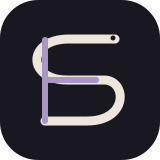

A QUIET CURIOSITY, GIVEN FORM.
Echidna
Local Vulnerability Research Agent
Question. Observe. Verify.
一枚蝶饰，一笔流线。
从艾姬多娜的白发与黑衣中，提炼冷静而鲜明的轮廓；让求知欲成为这个名字的底色。
A mark at every scale.
深底 · 浅底 · 单色 / 同一组路径24
32
48
80


01
蝶饰 / Butterfly
以 Re:Zero 艾姬多娜的蝴蝶发饰为线索。四片实心蝶翼略微倾斜，成为字母右上方的识别点。
02
白发与蛇形 / Flow
象牙白曲线连成柔和的 E，呼应白发的流动感，也延续神话 Echidna 的蛇形意象。
03
黑白与微紫 / Contrast
黑白承担主要辨识，淡紫仅落在蝶身。去掉颜色后，轮廓仍然完整。
ECHIDNA / A QUIET TERMINAL
Echidna · Local Vulnerability Research Agent Question. Observe. Verify. you> 检查这个假设，保留反例。 Echidna> 先确认前置条件，再做最小验证。 结论应能回到原始证据。
展示样张；示例回复不是预置人格或真实研究结果。
Room for a question.
茶会留在辅助图形里，主标聚焦蝶饰与 E。主题用于界面呈现；研究仍以工具、反例与原始证据为准。
INK
#19171F
#19171F
IVORY
#ECE6DB
#ECE6DB
LILAC
#A697C3
#A697C3